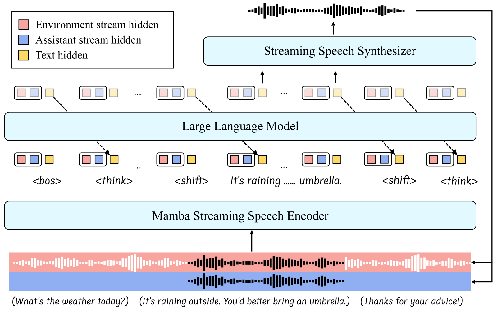
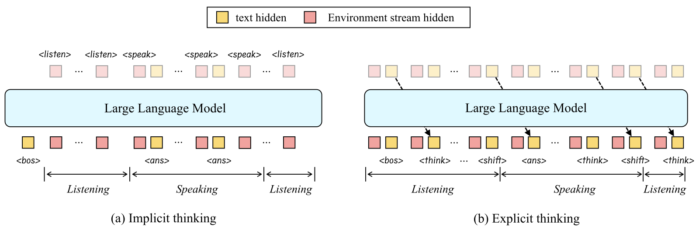
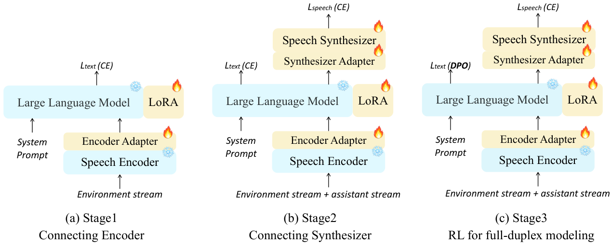
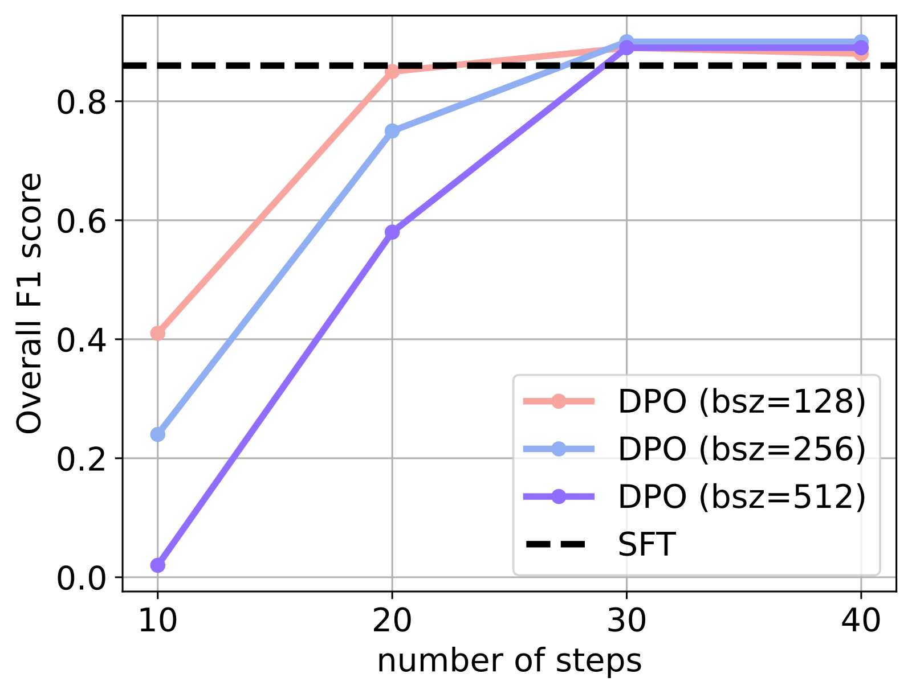
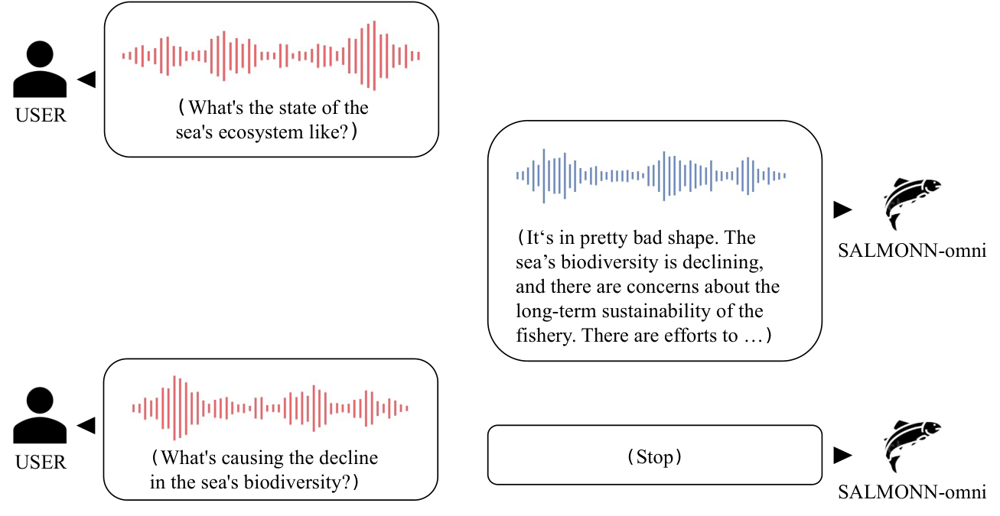
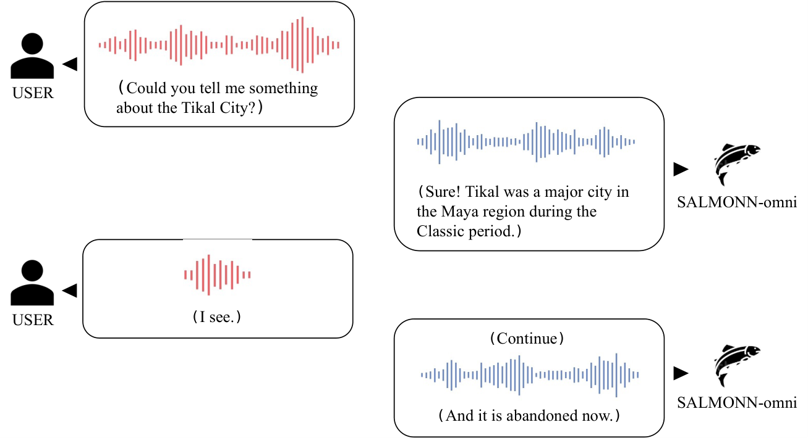

SALMONN-omni：不往词表里塞 codec 的单模型全双工语音 LLM —— 论文总结¶
原文：SALMONN-omni: A Standalone Speech LLM without Codec Injection for Full-duplex Conversation（arXiv:2505.17060v1，cs.CL，2025-05-17，许可 CC BY-SA 4.0；正式发表于 NeurIPS 2025）
快捷入口：摘要页 ｜ PDF ｜ HTML 全文 ｜ NeurIPS 正式版 PDF ｜ OpenReview
作者：Wenyi Yu*、Siyin Wang*、Xiaoyu Yang、Xianzhao Chen、Xiaohai Tian、Jun Zhang、Guangzhi Sun、Lu Lu、Yuxuan Wang、Chao Zhang†（*共同一作，†通讯作者）
机构：清华大学电子系（张超组）、字节跳动、剑桥大学
开源：论文指向 GitHub: bytedance/SALMONN，但我今天（2026-11-02）看了仓库首页和分支列表，没有 SALMONN-omni 的独立分支或权重，只有 demo 说明。基于它做的后续工作 ELLSA 和 ELLSA 2 有代码。
本文依据：我读完了 arXiv v1 HTML 的正文和全部附录（A–G）。NeurIPS 正式版可能修正了下文第八节列出的一些笔误，我没有逐条核对。
一、一句话概括¶
把流式语音编码器 → 一个 LLM → 流式语音合成器用隐向量（而非 codec token）串起来，按 80 ms 一个时间块，把“环境声音流”“自己说话的回声流”和 LLM 的文本 token 交错成一条序列，再让 LLM 自己输出 <think> / <shift> 两个特殊 token 来决定“继续听”还是“开口 / 闭嘴”。一个 LLM 实例同时完成听和说，不需要外挂 VAD、打断判别器或第二个 LLM。训练分三阶段，最后用 DPO 纠正“太容易被打断”的偏差。在“模型自己判断何时开口”的设定下，它在 4 个口语问答 / 对话基准上平均比 Moshi、Freeze-Omni 高 35.9%（相对值）。
二、要解决的问题（§1，§2）¶
作者把现有全双工方案分成三类，各有毛病：
| 路线 | 代表 | 作者指出的问题 |
|---|---|---|
| 把 codec token 塞进 LLM 词表 | Moshi、SyncLLM、OmniFlatten | 需要海量语音-文本数据弥合模态差距；文本知识会灾难性遗忘；是否说话完全靠 codec 流隐式决定，话轮时机常常不准（引 Talking Turns） |
| 级联 + 外部 VAD / 对话控制器 | Kimi-Audio、Qwen2.5-Omni | 模块间误差累积；本质还是半双工 |
| “model-as-a-server”：两个 LLM 进程，一个听一个说 | VITA-1.5、Freeze-Omni、MinMo | 不改坏 LLM，但一个 LLM 实例只能听或说，需要两份进程，算力和显存开销大 |
作者据此给出一个分类（Table 1）：
| 半双工（轮次式） | 全双工 · 单模型（standalone） | 全双工 · 非单模型 |
|---|---|---|
| GLM-4-Voice、Qwen2.5-Omni、MiniCPM-o、Baichuan-Audio | dGSLM、Moshi、SALMONN-omni | Freeze-Omni、VITA、MinMo |
SALMONN-omni 想占据的位置是：不注入 codec，同时是单模型全双工。
三、方法（§3）¶
作者列了实现全双工必须解决的四件事：流式输入输出、同时处理环境声音和自己的声音、对齐时间、处理话轮动态。下面按模块展开。

Figure 1：两条输入流（红：环境流，蓝：助手流）都经过同一个流式编码器，和文本 hidden（黄）交错送入 LLM；说话状态下，合成器读 LLM 输出的 hidden 生成语音。注意环境流（红底）里也包含了助手自己的声音（黑色波形），即回声。
3.1 Mamba 流式语音编码器（§3.1）¶
按 MT2KD 的思路，用非流式的 Whisper-large-v3 当老师，蒸馏出一个流式编码器：
- 100 Hz 的 log-Mel 特征经两层卷积降到 50 Hz，再把相邻两帧拼接成 25 Hz，送进 32 层 Mamba block（隐层维度 2048）（§4.1）。
- 老师侧的 Whisper 输出同样从 50 Hz 拼接成 25 Hz，加一个线性层对齐维度后，用 L1 损失匹配：\(\mathcal{L}_{\text{enc}} = \lVert W h^{\text{Mamba}}_t - h^{\text{Whisper}}_t \rVert_1\)。
- 在 LibriHeavy 和 GigaSpeech 上预训练 300k 步，batch 512（附录 A.2）。
选 Mamba 而不是因果 Transformer，作者给的理由是“在长对话上下文中泛化更好”，但正文没有做对比实验。
3.2 流式语音合成器（§3.2）¶
在 CosyVoice 2-0.5B 上微调，沿用它的“每 \(N\) 个文本 token 交错生成 \(M\) 个语音 token”的流式策略。区别是把合成器原本的文本输入换成 LLM 的隐状态（经过几层线性变换对齐），所以文本和语音之间是可微的 embedding 接口，不是离散文本。
用 LLM 的哪一层隐状态喂给合成器？附录 E（Table 12）比较了第 0、8、16、24 层和最后一层，最后选了第 24 层（Llama-3-8B 共 32 层）。作者的解释是：浅层的语音质量差，最后一层会让语音和文本表示耦合过紧，损伤 LLM 的语言能力。
3.3 全双工策略（§3.3）¶
（1）多流交错成单流。 对话被拆成两条流：
- 环境流：所有传进来的声音，包括用户语音、背景噪声、第三人说话，以及自己说话的回声；
- 助手流：模型自己此前生成的语音。
对话按固定时长切成时间块。每个块里，LLM 先读环境流的 embedding，再读助手流的 embedding（作者称为 dual-channel input），然后生成本块的文本输出。三者交错成一条自回归序列，所以一个 LLM 实例就能边听边说。
（2）“思考”策略：让 LLM 自己决定状态切换。 每个时间块都要决定是否切换“听 / 说”状态。作者比较了两种做法：

Figure 2：(a) 隐式：每块预测 <listen> 或 <speak>，但这些 token 不回填到输入；(b) 显式：<think> / <shift> 作为普通 token 写进序列并回填。
| 隐式思考（Implicit） | 显式思考（Explicit，最终采用） | |
|---|---|---|
| 特殊 token | <listen>、<speak> |
<think>、<shift> |
| 是否回填到输入 | 否；只有在说话时才回填文本 embedding | 是，和普通文本一样自回归 |
| 听的时候输出什么 | <listen> |
每块输出 <think> |
| 说完文本、等语音播完时 | — | 继续输出 <think>（文本比语音快得多，需要占位等待） |
| 状态切换 | 输出 <speak> / <listen> |
输出 <shift>（听→说、说→听都用它） |
作者的口号是 “your LLM is secretly a full-duplex predictor”（借用 DPO 论文标题的句式）：不需要单独的双工预测器，把状态切换当作生成普通 token 就行。
需要说明的是，这里的“思考”只是话轮状态控制的占位 token，不是推理内容。附录 C 试过在听的时候让模型输出流式 ASR 或“内心独白”作为思考内容，结果反而更差（见 5.4 节）。
3.4 时间同步与延迟（§4.1）¶
- 时间块 \(\Delta = 80\) ms：每听 80 ms 音频，LLM 输出 1 个文本 token。
- LLM 每攒够 4 个 token，合成器生成 12 个语音 token，对应 480 ms 语音（CosyVoice 2 的语音 token 是 25 Hz，\(12 / 25 = 0.48\) s）。
- 因此从决定开口到第一段音频输出，有固定的 \(4 \times 80 = 320\) ms 延迟。这还没算合成器本身的计算时间，也没算“用户说完 → 模型输出
<shift>”的判断延迟；论文没有报告端到端实测延迟。
3.5 三阶段训练（§3.4）¶

Figure 3：火焰为可训练，雪花为冻结。
| 阶段 | 训练什么 | 冻结什么 | 输入 | 任务 / 损失 |
|---|---|---|---|---|
| 1. 接编码器 | 编码器适配器（MLP）+ LLM 的 LoRA | Mamba 编码器、LLM | 只有环境流 | ASR + 问答，文本 CE |
| 2. 接合成器 | 编码器适配器、LoRA、合成器适配器、合成器 | Mamba 编码器、LLM | 环境流 + 助手流 | ASR、问答、多轮对话（含打断和附和样本），文本 CE + 语音 CE |
| 3. RL | 同阶段 2 | 同阶段 2 | 同阶段 2 | 打断和附和任务用 DPO；其余任务保留一部分 SFT 数据 |
LLM 骨干是 Llama-3-8B-Instruct，LoRA rank 32、缩放因子 1.0。阶段 1、2 各训 50k 和 30k 步，batch 128，32 张 A100（附录 A.2）。
阶段 3 用的是标准 DPO 目标：
但论文没有交代偏好对 \((y_w, y_l)\) 是怎么构造的，也没给 \(\beta\)。按任务性质推测，\(y_w\) 应该是“该停时输出 <shift>、不该停时继续说”的序列，\(y_l\) 则相反；这一点是我的推测，论文里没有写。
四、训练数据（§4.2，附录 A.1，Table 7）¶
| 任务 | 数据集 | 样本数 |
|---|---|---|
| ASR | LibriSpeech / GigaSpeech-M | 281k / 200k |
| 问答 | Alpaca-52k、Web Questions、TriviaQA、SQuAD、Natural Questions、VoiceAssistant-400K（来自 Mini-Omni）、UltraChat（来自 SLAM-Omni） | 共约 730k |
| 多轮对话 | 以 TriviaQA / NQ 的主题，用 Llama-3-8B-Instruct 生成对话 | 25k + 56k |
几个要点：
- 几乎全是合成语音：除 VoiceAssistant-400K 和 UltraChat 的问题音频外，问题和回答都由 CosyVoice2-0.5B 合成；回答文本由 Llama-3-8B-Instruct 生成（提示词见 附录 B）。
- 打断数据分两类：
- 与上下文无关的打断：让 GPT-4o 生成 10 句直接打断语（如 “Please stop talking right now.”）；
- 与上下文相关的打断：让 Llama-3 生成“与当前对话强相关的问题”（应当打断）和“完全无关的问题”（干扰项，不应打断）（提示词见 附录 B.3）。
- 附和（backchannel）：只用了 7 个常见词或短语（如 “Uh-huh.”）。
- 训练中考虑了多说话人打断，即第三人说话的情况。
五、实验结果（§5）¶
评测集：Llama Questions、Web Questions（用火山引擎商用 TTS 转成语音）、TriviaQA（取 OpenAudioBench 的 1000 条子集）、AlpacaEval（来自 VoiceBench）。前三个用准确率；AlpacaEval 用 GPT-4.1 打 1–5 分（提示词见 附录 B.4）。S2T 评文本回答，S2S 先用 Whisper-large-v3 转写语音回答再评。
两种评测设定：
- predicted turn-taking：模型自己决定何时开口，只有全双工模型能做；
- oracle turn-taking：强制在问题结束时开口，可以和半双工模型比较（Moshi 无法强制开口，所以不参加）。
5.1 隐式 vs 显式思考（§5.1，Table 2，阶段 1 结果）¶
| 策略 | Llama Q. succ / S2T | Web Q. succ / S2T | TriviaQA succ / S2T | AlpacaEval succ / S2T |
|---|---|---|---|---|
| 隐式 | 97.3 / 76.3 | 99.9 / 50.8 | 95.8 / 62.0 | 67.3 / 3.73 |
| 显式 | 100.0 / 82.0 | 99.9 / 52.4 | 92.3 / 67.5 | 68.3 / 4.48 |
显式在回答质量上全面占优，话轮成功率在 TriviaQA 上反而低一些。作者给出的解释是：显式把状态 token 回填进序列，更符合自回归模型的训练方式。
一个有价值的附带发现：阶段 1（只有环境流）在 AlpacaEval 上的话轮成功率只有约 70%；阶段 2 加入助手流后升到约 90%。模型“听到自己在说什么”，对判断何时停、何时接话很关键。
5.2 对话能力（§5.2，Table 3）¶
predicted turn-taking（自己判断何时开口）：
| 模型 | Llama Q. S2T / S2S | Web Q. S2T / S2S | TriviaQA S2T / S2S | AlpacaEval S2T / S2S |
|---|---|---|---|---|
| Moshi | 60.8 / 54.5 | 23.4 / 22.1 | 25.6 / 16.7 | 1.84 / 1.76 |
| Freeze-Omni | 74.2 / 56.2 | 40.8 / 27.9 | 45.1 / 28.5 | 3.90 / 2.46 |
| SALMONN-omni | 79.3 / 73.6 | 49.7 / 43.7 | 63.6 / 56.0 | 4.01 / 3.22 |
“平均相对提升 35.9%”是拿 SALMONN-omni 和 Freeze-Omni 在这 8 个指标上逐项算相对提升再取平均。我复算的结果是 35.94%，与论文一致；但单项从 +2.8%（AlpacaEval S2T）到 +96.5%（TriviaQA S2S）不等，见第八节。
oracle turn-taking（强制开口，和半双工模型比）：
| 模型 | Llama Q. | Web Q. | TriviaQA | AlpacaEval |
|---|---|---|---|---|
| GLM-4-Voice | 75.0 / 65.7 | 38.5 / 37.0 | 50.8 / 47.5 | 3.82 / 3.58 |
| Qwen2.5-Omni | 78.7 / 75.7 | 41.9 / 39.6 | 55.5 / 52.2 | 3.04 / 2.61 |
| VITA-1.5 | 77.3 / 56.0 | 43.9 / 31.0 | 54.8 / 41.3 | 3.92 / 1.94 |
| MiniCPM-o | 76.3 / 70.0 | 47.1 / 42.7 | 65.4 / 56.0 | 3.99 / 3.44 |
| Kimi-Audio | 79.7 / 68.3 | 44.0 / 37.3 | 63.6 / 51.2 | 3.92 / 2.95 |
| Baichuan-Audio | 76.0 / 74.0 | 43.1 / 40.7 | 56.9 / 53.0 | 3.76 / 3.32 |
| Freeze-Omni | 77.0 / 61.0 | 42.3 / 29.1 | 53.5 / 36.5 | 3.71 / 2.42 |
| SALMONN-omni | 80.0 / 75.0 | 50.5 / 45.4 | 66.0 / 58.8 | 4.05 / 3.33 |
S2T 四项全部第一；S2S 在 Web Q. 和 TriviaQA 上第一，Llama Q. 输给 Qwen2.5-Omni，AlpacaEval 输给 GLM-4-Voice 和 MiniCPM-o。考虑到 Kimi-Audio 用了约 1300 万小时音频，而 SALMONN-omni 的训练数据只有百万条量级、且大部分是合成语音，这个结果相当有说服力。不过 Llama-3-8B 的文本底子本身就比部分对手强，“数据效率”的对比并不是完全公平的。
5.3 双工行为（§5.3）¶
话轮转换成功率（Table 4）：
| 模型 | Llama Q. | Web Q. | TriviaQA | AlpacaEval |
|---|---|---|---|---|
| Moshi | 85.0 | 76.0 | 37.1 | 83.4 |
| Freeze-Omni | 99.7 | 99.8 | 72.0 | 87.9 |
| SALMONN-omni | 99.7 | 99.6 | 92.8 | 92.0 |
差距主要在 TriviaQA 和 AlpacaEval 这类问题短、语速快的数据上：Moshi 只有 37.1%，Freeze-Omni 72.0%，SALMONN-omni 92.8%。
与上下文无关的打断 vs 附和，带回声（Table 5）。“echo factor ×n” 表示模型能听到 n 倍音量的自身回声：
| 模型 | 回声 | P | R | F1 |
|---|---|---|---|---|
| Moshi | ×1.0 | 0.84 | 0.77 | 0.80 |
| Freeze-Omni | ×0.0 | 0.64 | 0.72 | 0.68 |
| Freeze-Omni | ×0.1 | 0.19 | 0.86 | 0.31 |
| Freeze-Omni | ×1.0 | 0.10 | 0.69 | 0.17 |
| SALMONN-omni | ×1.0 | 0.84 | 0.92 | 0.88 |
Freeze-Omni 依赖外部 VAD，只要有一点回声（×0.1），精确率就从 0.64 掉到 0.19，几乎听到什么都当成打断。SALMONN-omni 和 Moshi 都把自己的声音当作输入的一部分建模，因此对回声鲁棒。这是“单模型全双工”最直接的实际收益。
DPO 的效果（Table 6，Figure 4，附录 D）：
| 阶段（batch 256） | 无关打断 P / R / F1 | 相关打断 P / R / F1 | 总 F1 |
|---|---|---|---|
| SFT（阶段 2） | 0.68 / 0.93 / 0.79 | 0.88 / 0.99 / 0.93 | 0.86 |
| DPO 10 步 | 0.88 / 0.07 / 0.13 | 0.95 / 0.21 / 0.34 | 0.24 |
| DPO 40 步 | 0.84 / 0.92 / 0.88 | 0.89 / 0.98 / 0.93 | 0.90 |

Figure 4：三种 batch size 下 DPO 的总 F1 随步数的变化，虚线为 SFT 基线。
SFT 模型的问题是太容易被打断：无关打断场景下精确率只有 0.68，比如把附和语当成打断。DPO 刚开始时模型矫枉过正，几乎不让打断（召回率 0.07）；到 30–40 步时恢复，并超过 SFT。整个 DPO 只训了 40 步，最终增益主要集中在“无关打断”的精确率（0.68 → 0.84）上，“相关打断”几乎不变。
5.4 附录里值得看的结果¶
- 更丰富的“思考”内容反而有害（附录 C，Table 8）：在小数据（LibriSpeech + Alpaca）上比较了 5 种策略。让模型在听的时候输出流式 ASR 或由 LLM 生成的“内心独白”（Implicit-ASR / Explicit-ASR），test-clean 的 WER 从 2.40 升到 3.48–5.09。作者的解释是：听状态的输出越多样，“听”和“说”两种工作模式就越难区分，说话时会出现混乱生成；另外推理时错误的思考内容会通过误差传播影响回答。
- 情感语音（附录 F，Table 13）：让 LLM 先输出一个情感标签，合成器按 instruct-TTS 风格生成。用 gpt-4o-audio 打情感强度分，得 3.49，为所有模型中最高。但作者承认情感有时会用错。
- 案例（附录 G）：问答、开放对话、上下文相关打断、附和各一例。

Figure 7：用户在模型说话时追问一个相关问题，模型停止说话。

Figure 8：用户插入附和语，模型继续说。
六、评测设计的局限¶
- 全部是合成语音：训练数据由 CosyVoice2 合成，Web Q. 测试集由火山 TTS 合成，打断和附和测试集看起来也是构造出来的。在真人自然语音、口音、真实房间回声下的表现未知。
- 打断测试集很小：每个设定只有 200 条（100 正例 + 100 负例），F1 差 0.02–0.04 时的统计意义有限。
- 负例设计有盲区：上下文相关设定中，负例是“第三人说的无关问题”和“静音”，没有“用户本人说的无关话”。所以无法判断模型是按语义相关性决策，还是部分依赖说话人身份。
- 附和只有 7 种说法，训练和测试用的句子虽然不同，但覆盖面很窄。
- 话轮成功率的判定标准没有给出，比如开口早多少、晚多少算失败。
- 没有长对话评测：所有评测都是单轮或短多轮，论文完全没有讨论上下文长度、截断或 KV 管理（见第七节第 1 条）。
七、与我们对话交互研究的关联¶
1. 上下文消耗：去掉 codec 并不省上下文，反而更费。 按论文给出的参数推算（假设编码器适配器不再降采样，且没有额外的块边界 token；论文没写这两点）：
即每分钟约 3750 个位置。Llama-3-8B-Instruct 的原生上下文是 8192，所以大约 2.2 分钟就会占满（\(8192 / 62.5 \approx 131\) s）。相比之下，Moshi 把多路 token 相加进同一位置，只有 12.5 位置/秒，3000 步约 4 分钟。这和我们在横向对比笔记里的结论一致：上下文膨胀的根源是“每帧都占位置”和“自己说的话也回灌”，与是否用 codec 关系不大。
而 5.1 节的结果说明，回灌助手流恰恰是话轮成功率从约 70% 升到约 90% 的原因，回声鲁棒性（Table 5）也依赖它。“听到自己”和“上下文成本”在这个架构里是直接冲突的。 后续的 SALMONN-duo 就选择去掉 echo 流来缩短序列。如果我们沿用这条路线，可以考虑几种折中：助手流只保留更低帧率的摘要 embedding；或者只在说话状态下保留助手流（听的时候助手流是静音，基本是浪费）；或者对历史块做压缩，只保留文本。
2. “思考 token”不能当推理用。 名字叫 thinking，实际是 <think> 占位加 <shift> 切换，没有任何推理内容。附录 C 的负面结果对我们关心的“边听边想 / 边听边调工具”有直接参考价值：在同一条序列的“听”槽位里塞进有内容的输出（ASR、内心独白），会破坏说话质量。这从侧面支持把“想”和“调工具”放到另一个进程或后端去做，也就是 SALMONN-duo、MoshiRAG、GPT-Live 等收敛到的“快慢双系统 + 异步委托”方案，而不是让前端的单序列同时承担。
3. 工具调用：论文完全没有涉及。 不过它的接口天然适合扩展：状态切换已经是普通 token，加一个 <call> 之类的 token 在形式上是自然的。真正的问题是工具返回结果放在哪里：塞回 80 ms 时间线会进一步挤占本来就紧张的上下文。
4. 单模型的好处是真实存在的。 Table 5 中 Freeze-Omni 在有回声时 F1 从 0.68 掉到 0.17，说明“外挂 VAD + 两个 LLM”的方案在真实扬声器场景（尤其是机器人、免提设备）里很脆弱。如果我们的落地形态是机器人头（参见 Moshi-Face、ELLSA 2），模型能区分自己的回声这个能力比基准分数更重要。
5. 和 Easy Turn 的对照。 Easy Turn 是“外挂轮次检测器、主模型半双工”的代表，SALMONN-omni 是“主模型自己预测轮次”的代表。前者模块化、可单独迭代，但看不到对话上下文；后者能做上下文相关打断（判断追问是否和自己正在说的内容相关），代价是轮次能力和主模型绑定，改一次就要重训。
6. DPO 修正双工行为的思路可以借鉴。 SFT 模型偏向“容易被打断”，这很可能是训练数据中打断正例偏多导致的。用偏好学习来调整“该不该停”的阈值，比改数据配比更直接。不过论文没公开偏好对的构造方法，复现时需要自己设计。
7. 它是 ELLSA / ELLSA 2 的底座。 我们已经读过的 ELLSA 2 完全沿用了本文的 80 ms 时间块和“文本先于语音”的 thinker-talker 时序，再外挂手势和表情生成器。读懂本文就能理解 ELLSA 2 主干的时序设计。
八、论文中的不一致与可疑之处¶
- “at least 30%” 的说法不准确。 摘要和贡献点都说相对提升“at least 30%”，但正文的 35.9% 是 8 个指标的平均相对提升。逐项看，Llama Q. S2T 只提升 6.9%（79.3 vs 74.2），AlpacaEval S2T 只提升 2.8%（4.01 vs 3.90）。“至少 30%”只对平均值成立，对单项不成立。
- “consistently outperforms” 有夸大。 §5.1 说显式思考“始终优于”隐式，但 Table 2 中 TriviaQA 的话轮成功率是隐式更高（95.8 vs 92.3）。
- 学习率笔误。 附录 A.2 写的是 \(4\times10^{5}\) 和 \(3\times10^{5}\)，显然应为 \(4\times10^{-5}\) 和 \(3\times10^{-5}\)（第三阶段写的是 \(1\times10^{6}\)，同理应为 \(10^{-6}\)）。
- Table 11 有一行数字算不对。 batch 512、DPO 20 步那一行，上下文相关设定写的是 P=0.98、R=0.96、F1=0.55；但 \(2 \times 0.98 \times 0.96 / (0.98 + 0.96) \approx 0.97\)。很可能是召回率写错了（R≈0.38 时 F1≈0.55，与 Figure 4 中该点总 F1 约 0.58 的走势吻合）。
- Table 5 没说明 SALMONN-omni 用的是 DPO 后的模型。 它的 0.84 / 0.92 / 0.88 与 Table 6 中“DPO 40 步”的无关打断结果完全一致，而 SFT 模型在同一设定下只有 0.79。拿 RL 后的模型和 Moshi、Freeze-Omni 比，应该在表注里写明。
- 阶段 2 的描述自相矛盾。 §3.4 说阶段 2“the whole model is trained in an end-to-end manner”，紧接着又说编码器和 LLM 骨干都冻结。准确的说法应该是“梯度端到端贯通，但只训练适配器、LoRA 和合成器”。
- “全双工 SOTA” 的对比面很窄。 predicted turn-taking 设定只比了 Moshi 和 Freeze-Omni 两个模型，没有同期的 OmniFlatten、SyncLLM、MinMo 等（可能是因为它们没有开源权重，但论文没有说明）。
- 阶段 2 后文本能力有所下降，但正文没讨论。 阶段 1 显式策略的 S2T（Table 2：Llama Q. 82.0，AlpacaEval 4.48）高于最终模型（Table 3：79.3，4.01），说明接入合成器和助手流后，文本回答质量有所损失。
- 附录 E 选第 24 层的依据比较弱。 Table 12 中第 16 层的 S2S 在 Web Q.（44.8 vs 43.7）和 TriviaQA（56.6 vs 56.0）上都优于第 24 层，各层之间的 S2T 差异也在 1 个点左右。所谓“最后一层 S2T 最差”是成立的，但差距很小。
- 小笔误：附录 B.2 的标题与 B.1 重复（都写着 “spoken QA response”），实际内容是多轮对话生成的提示词；§5.2 标题里的 “capailities” 拼错。
九、链接汇总¶
本文：摘要页 ｜ PDF ｜ HTML ｜ NeurIPS 2025 摘要 ｜ NeurIPS PDF ｜ NeurIPS 海报页 ｜ OpenReview ｜ GitHub: bytedance/SALMONN
章节：§1 引言 ｜ §2 相关工作 ｜ §3 方法 ｜ §3.1 Mamba 编码器 ｜ §3.2 合成器 ｜ §3.3 全双工策略 ｜ §3.4 训练 ｜ §4.1 模型规格 ｜ §4.2 训练任务 ｜ §4.3 评测 ｜ §5.1 思考策略对比 ｜ §5.2 对话能力 ｜ §5.3 双工行为 ｜ §6 结论
附录：A 训练细节 ｜ B 提示词 ｜ C 其它思考策略 ｜ D DPO 详细结果 ｜ E 嵌入层选择 ｜ F 情感语音 ｜ G 案例
图表：Fig 1 架构 ｜ Fig 2 思考策略 ｜ Fig 3 三阶段训练 ｜ Fig 4 DPO 曲线 ｜ Fig 5–8 案例 ｜ Table 1 分类 ｜ Table 2 ｜ Table 3 ｜ Table 4 ｜ Table 5 ｜ Table 6 ｜ Table 7 ｜ Table 8 ｜ Table 9–11 ｜ Table 12 ｜ Table 13
SALMONN-omni 系列：v1 技术报告 (2411.18138) ｜ SALMONN-duo (2609.34247) ｜ ELLSA 代码 ｜ ELLSA 2 代码 ｜ SALMONN (ICLR 2024)
对比的语音对话模型：Moshi ｜ SyncLLM ｜ OmniFlatten ｜ dGSLM ｜ Freeze-Omni ｜ VITA-1.5 ｜ MinMo ｜ GLM-4-Voice ｜ Qwen2.5-Omni ｜ Kimi-Audio ｜ Baichuan-Audio ｜ MiniCPM-o 2.6 ｜ Mini-Omni ｜ SLAM-Omni ｜ Talking Turns 基准
模型组件与方法：Llama 3 ｜ Whisper ｜ MT2KD ｜ Mamba ｜ CosyVoice 2 ｜ LoRA ｜ DPO ｜ PPO
数据与评测：LibriSpeech ｜ GigaSpeech ｜ LibriHeavy ｜ Stanford Alpaca ｜ Web Questions ｜ TriviaQA ｜ SQuAD ｜ Natural Questions ｜ Llama Questions / Spectron ｜ VoiceBench ｜ OpenAudioBench（Baichuan-Audio）
本库相关笔记：全双工语音模型对比：上下文与工具调用 ｜ ELLSA 2 论文总结 ｜ Easy Turn 论文总结 ｜ Moshi-Face 论文总结 ｜ DuplexJev 论文总结